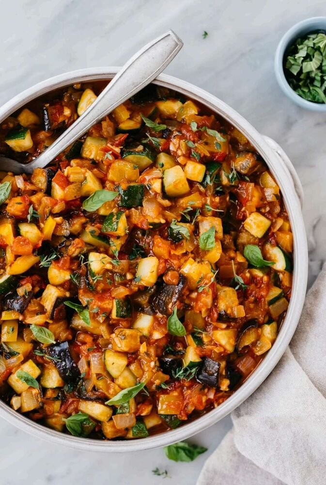

The Most Incredible Ratatouille

Ingredients
Veggies
- 2 eggplants
- 6 roma tomatoes
- 2 yellow squashes
- 2 zucchinis
Sauce
- 2 tablespoons olive oil
- 1 onion, diced
- 4 cloves garlic, minced
- 1 red bell pepper, diced
- 1 yellow bell pepper, diced
- salt, to taste
- pepper, to taste
- 28 oz can of crushed tomatoes
- 2 tablespoons chopped fresh basil, from 8-10 leaves
Seasonings
- 2 tablespoons chopped fresh basil, from 8-10 leaves
- 1 teaspoon garlic, minced
- 2 tablespoons Chopped fresh parsley
- 2 teaspoons fresh thyme
- salt, to taste
- pepper, to taste
- 4 tablespoons olive oil
Instructions
- Preheat the oven for 375˚F (190˚C).
- Slice the eggplant, tomatoes, squash, and zucchini into approximately 1⁄16-inch (1-mm) rounds, then set aside.
- Make the sauce: Heat the olive oil in a 12-inch (30-cm) oven-safe pan over medium-high heat. Sauté the onion, garlic, and bell peppers until soft, about 10 minutes. Season with salt and pepper, then add the crushed tomatoes. Stir until the ingredients are fully incorporated. Remove from heat, then add the basil. Stir once more, then smooth the surface of the sauce with a spatula.
- Arrange the sliced veggies in alternating patterns, (for example, eggplant, tomato, squash, zucchini) on top of the sauce from the outer edge to the middle of the pan. Season with salt and pepper. Cover the pan with foil and bake for 40 minutes. Uncover, then bake for another 20 minutes, until the vegetables are softened.
- Mix seasoning ingredients and pour over the cooked ratatouille.